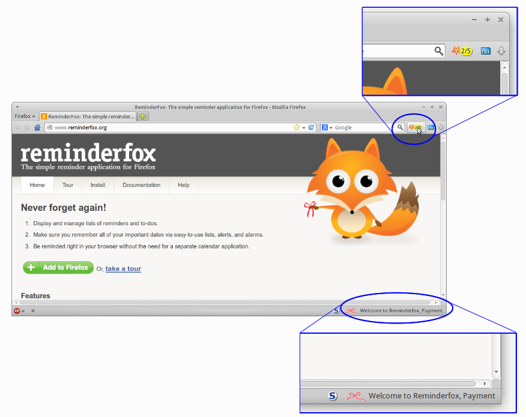
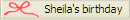
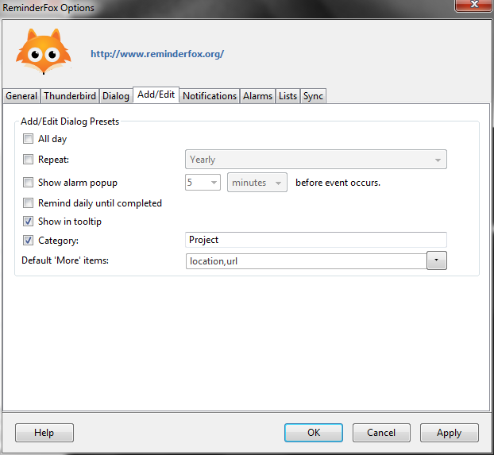

Options - Configure your Reminderfox
Options Tabs
The dialog
Configure your Reminderfox let you control how Reminder works for your needs and flavours.
To open the dialog Reminderfox provides some different menu items on different places:
- on the application's main menu bar use the Foxy context menu
- the Foxy menu on the Reminderfox Main Dialog
- with showing the Status-Bar/Addon-Bar on the context menu
- on the application's main menu bar with the "Tools" menu, select ‘ReminderFox’-->’Options…’
All configurations and settings are organized on tabs, the following paragraphs describe each tab.
1. General
Basic settings for Reminderfox on this tab: like the storage location of the reminders and also access Import/Export them as well as restoring from the backup Reminderfox writes frequently.
1.1 Reminderfox Data
This section allows you to set the location of your file which holds the reminders, as well as importing and exporting.
The reminder data is stored in an ICS data file. By default it's located in the profile directory, the "Use Default" box is enabled. Alternatively the data file can by placed at any other location. The textbox and button [Browse] [1] can be use to change the storage location.
Note Reminderfox 'Remote Calendar' feature
| Remote Calendar features requires to store details for the accounts and the status of reminders stored on the remote calendar. These details are handled for each Reminderfox data file. So changing the storage location for the reminders needs to change that other file also.
Select your choice to use the defined Remote Calendar setting also with new storage location. Only the account details will be held, not the reminder details. This will 'refresh' them with the new storage. |

Click to enlarge
|
[Import/Export] [2] opens a menu to work with reminder data or with the "preferences" of Reminderfox.
The reminder import/export is useful for backing up your reminders as well as sharing them with other profiles, computers, or calendar services. Only iCalendar (ics) files are supported for importing and exporting.
See also Add/Subscribe Reminders
1.2 Backup your Reminders
Reminderfox automatically stores backup versions of your reminders.
Those backups are stored alongside the file your reminder data is stored. The backup files are named with extension
.bak1 .. .bak3
It's a good idea to make your own backups; taking a backup a least once a month is a good practice.
|

|
Select the first link to start your own backup. It will open an directory/file dialog so you can select a different location / storage device (USB stick).The second link will let you search for a previous stored backup file for restoring. |
1.3 Calendar Defaults
Date Format
To change the date format Reminderfox a wide range is provided, press the menu button (see below) to open an additional dialog. Use it as shown with the tooltip .

Time Format
Select a 24-hour or the AM/PM notation with a tic.
Starting day of week, Week number and Number of Calendar Months displayed
 |
These values are related to the calendar part of the main dialog or when the mini calendar is shown with the calendar icon on the main menu bar (see red mark).
Note: To add the Calendar icon to the main menu bar, see here |
1.4 Layout Defaults
Default Text Size
Reminderfox features a variable text size concept with simple key operations. A default text size for the Reminderfox Dialog can be defined with the setting of ''Default Text Size", a typical value is 12 px.
Once the Reminderfox Dialog is opened use the following keys to change the text size on "Main List" and the "Calendar" separately
[ Cntrl ] [ + ] [ - ] [ # ]
|
Change the size for Calendar
|
[ Alt ] [ + ] [ - ] [ # ]
|
Change the size for List
|
|
[ # ] = Reset to default text size
|
Both settings are stored when closing the ReminderFox Dialog and will be reused with next start.
Main List Defaults
The features for "Use only single button bar" is discussed here.
"Open Reminders/ToDos Menu on Mouse hover" will give a better access to switch between Reminders and Todos or the User Lists, when the mouse pointer is moved over the button the selection menu will popup.
2. System
Reminderfox is integrated with it's host application (Firefox or Thunderbird). This tab has settings for a fast status overview and easy access of Reminderfox.
See also additional methods for Printing and work with WEB pages or mail messages.
2.1 Access Reminderfox on Firefox / Thunderbird
Reminderfox installed on Firefox / Thunderbird has different methods to open the main dialog (mentioned above).
The most convenient method is the Foxy Icon on one of the Firefox/Thunderbird menu bars. Another method is offered with the Foxy Bow typically placed on the applications Status-/Addon bar.
|  |
With a click on Foxy Icon or the Foxy Bow the Reminderfox Main Dialog is opened to show by default the Main List with events or todos and the Calendar.
The Foxy Icon can hold a badge with one or two number or none. The number represent the count of reminders:
-- Today's first number
-- Upcoming second number
The badge has a yellow background but changes to red with important reminders.The Foxy Bow shows the status and a text string with today's reminders.How to configure it see below. |
The
Foxy Bow on the status/addon bar will indicate reminders. If there is a reminder for the current day, it will appear on the status bar. The color of the bow icon changes, according to the status of reminders.
-  If there is a reminder for the current day, the bow is red.
- If there are upcoming reminders, the bow is blue.
- If there are no current or upcoming reminders, the bow will be greyed out.
Tab is labeled with Firefox or Thunderbird
|
Access Reminderfox on .. FX/TB
has the controls for the Foxy Icon and the Foxy Bow
Foxy Icon can be placed / removed with normal "Customize" found on the different application bars.
The ticbox beside "Enabling on the main menu" is used to enabled/disable the appearence.
The Foxy Bow isn't a normal toolbar button. With the pulldown menu the placement on the system tabs can be selected. Also the placement on that bar can be set.
Together with the bow a text holding the today's reminder can be shown. The length of the text can be limited here. A length of 0 would hide the text.
Note:
Disabling the ticbox will not hide the Status-/Addon bar, so it's not hidden for other usage
|
2.2 Agenda/Printing
For details about printing and showing an Agenda see
here. Printing is available with the context menu on Main List.
With the ticbox shown above the user can enable an Agenda to be opened on a separate tab of Firefox or Thunderbird. If required the normal system handles are used to print that page.
2.3 Reminders for WEB-Pages and E-Mail
Working with web pages or emails (Thunderbird or web mailer like Google Mail) it's helpful to generate reminders/todos so an easy recall is possible.
Using reminders for mail messages, it's possible to open a message with a reminder from within Reminderfox, see also
EMail Integration
|
How to work on web pages or messages can be found on Add/Subscribe Reminders
On the tab:System (Firefox/Thunderbird) -- see above -- this feature can be enabled/disabled. Based on the setting the context menu item [Add/Subscribe with Reminderfox] will be shown on the web page or the mail message. |
3. Dialog

4. Add/Edit

5. Notifications
6. Alarms

7. Lists
8. Sync
Tab formerly called "Network"
As described above Reminderfox offers two different methods to work with external systems:
8.1 Remote Server
-- formally labeled with "Network"
Please see here for details |

|
8.2 Remote Calendar
-- an additional method to support synchronize Reminderfox with other calendars like Google Calendar or services like fruux.com
Please see here for details |

|
Important: Please be aware only one method a time can be enabled.


{kind=link}
{kind=link}
{kind=link}
{kind=link}
{kind=link}
{kind=link}
{kind=link}
{kind=link}
{kind=link}
{kind=link}